Apuntes para la oposición al Cuerpo de Diplomados Comerciales del Estado
6 Teoría de los costes. Análisis de la dualidad en el ámbito de la empresa. Análisis temporal. Otros desarrollos.
6.1 Introducción  1'
1'
El Estrecho de Ormuz bloqueado en 2026, el gas disparado por la guerra de Ucrania, los aranceles de EE.UU. encareciendo cadenas de suministro enteras: la última década no deja de recordar que conocer bien la estructura de costes de una empresa no es un mero ejercicio contable, sino una condición para seguir operando.
Por ello, este tema se centra en la teoría de costes1, que busca identificar, de entre todas las combinaciones técnicamente eficientes, aquellas que lo son económicamente, es decir, que minimizan los costes de producción.
Por consiguiente, el objetivo de la presente exposición será el estudio de los costes económicos2 a través del siguiente esquema:
Teoría neoclásica de los costes, donde se construirá la función de costes y se realizará un análisis temporal.
Críticas a la teoría de costes tradicional, desde el ángulo empírico y organizativo.
Otros desarrollos, que amplían el análisis a supuestos más realistas de la empresa.
6.2 Teoría neoclásica de los costes 12'
La teoría neoclásica parte de los siguientes supuestos:
Racionalidad,
Certidumbre,
Ausencia de rigideces, se opera en situación de competencia perfecta.
Los precios son indicadores de la escasez relativa
Construcción de la función de costes
A partir de la Teoría Neoclásica de la Producción, obtenemos una Función de Producción representativa de una determinada tecnología.
Isocuantas
De la Función de Producción podemos obtener las isocuantas, que son las curvas de nivel de la Función de Producción y muestran las combinaciones técnicamente eficientes de factores productivos que producen la misma cantidad de output.
Gráficamente, en un plano de capital, \(K\), y trabajo, \(L\), como el de la Figura 6.1 se representan las curvas isocuantas \(q_{0}\) y \(q_{1}\).
Sin embargo, el concepto de eficiencia técnica no es suficiente para caracterizar la decisión de la empresa, ya que este análisis no nos muestra en qué punto de la isocuanta se situará la empresa (algo que resuelve la teoría de costes), ni en qué isocuanta de situará (algo que resuelve la teoría de los mercados)3.
Para ello, necesitaremos información económica (es decir, los precios de los factores productivos): dentro de un conjunto de combinaciones técnicamente eficientes (es decir, puntos de la isocuanta), resultarán más atractivos para el productor aquellas combinaciones más intensivas en el factor comparativamente más barato.
Problema de la empresa
Por tanto, el problema al que se va a enfrentar la empresa es el de elegir aquella combinación de factores productivos que le suponga un menor coste para producir un output dado, o, inversamente, elegir aquella combinación que, dado un coste, proporcione el mayor nivel posible de producto.
Análisis de dualidad
Considerando el doble enfoque que presenta el análisis de dualidad en el problema del productor, en ambos casos el problema de la empresa es el de maximizar su beneficio: en el primero, se trata de maximizar el beneficio con un coste dado (por lo que hay que maximizar la producción), mientras que en el segundo se trata de maximizar el beneficio con una producción dada –por ejemplo, un puente, cuyo tamaño viene fijado de antemano por el proyecto y no es una decisión de la empresa– (por lo que hay que minimizar el coste).
Así, el problema del productor se puede plantear como:
La maximización de la producción dada una restricción de costes. Es decir, tratará de encontrar aquellas combinaciones de factores productivos que le otorguen la máxima producción posible dada una restricción económica.
La minimización de costes para una determinada producción. Es decir, tratará de encontrar aquellas combinaciones de factores productivos que le produzcan una determinada producción al mínimo coste.
Dicho paralelismo se muestra formalmente a través del análisis de la dualidad que refleja cómo, bajo ciertas condiciones, la combinación de factores productivos será la misma (de la misma manera que en la teoría de demanda neoclásica del consumidor).
Supuestos
Para plantear los problemas primal y dual del productor, partimos de los siguientes supuestos:
Contexto de competencia perfecta (es precio-aceptante respecto a los factores productivos).
Tecnología caracterizada por varios inputs que dan lugar a un solo output, representada a partir de una Función neoclásica \(Q=f(X)\).
Esta función de producción neoclásica es continua y dos veces diferenciable, cardinal, homogénea y estrictamente no negativa, monótona creciente, con \(PMg\) de los factores productivos positiva pero decreciente y estrictamente cuasi-cóncava.
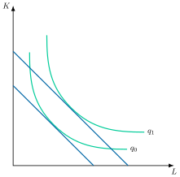
Problema primal
El problema primal consiste en elegir la combinación de factores productivos que maximiza la producción \[\max\quad Q=f\left(X\right) \tag{6.1}\]
sujeta a un coste dado \[\bar{C}=\sum\limits_{i=1}^{n}w_{i}\cdot x_{i} \tag{6.2}\] donde \(w_{i}\) es el precio de los factores y \(x_{i}\) la cantidad de factores empleados.
La condición de eficiencia económica indica que, en el equilibrio, la tasa a la que la empresa puede intercambiar internamente los factores productivos, es decir, la Relación Marginal de Sustitución Técnica, \(RMST\), es igual a la tasa a la que puede hacerlo en el mercado, es decir, la ratio de precios de los factores.
Así, el productor demanda factores productivos hasta el punto donde el cociente de las \(PMg\) de cada par de factores se iguale a su precio relativo: \[RMST_{i,j}=\dfrac{PMg_{x_{i}}}{PMg_{x_{j}}}=\dfrac{w_{i}}{w_{j}} \tag{6.3}\]
Gráficamente, como se observa en la Figura 6.1 se representan por orden:
Primero representamos la restricción. La curva isocoste, que representa las combinaciones de factores que, dados los precios de los mismos, tienen el mismo coste total. La pendiente de la curva isocoste es igual al cociente de los precios de los factores cambiado de signo \((\text{–} w_{i}/w_{j})\).
En segundo lugar, representamos las curvas isocuantas, antes definidas, cuya pendiente, en valor absoluto, es la \(RMST\) y muestra la relación a la que puede intercambiarse un factor por otro para mantener el nivel de producción constante.
En tercer lugar, el equilibrio se encuentra en el punto de tangencia de la recta isocoste con la isocuanta más alejada del origen (porque estamos maximizando). En este punto, \(RMST=w_{i}/w_{j}\). Por lo tanto, se cumple la condición de eficiencia económica.
A su vez, de la condición de primer orden se obtienen las funciones de demanda ordinarias (marshallianas) de factores productivos, es decir, la demanda de factores productivos en función del precio de los factores y del coste: \[x_{i}\left(W,C\right) \tag{6.4}\]
Características de las demandas marshallianas:
Continuas
Su respuesta a los precios de los factores no tiene signo determinado a priori, pues combina un efecto sustitución y un efecto renta.
Crecientes en \(C\) si el factor es normal y decrecientes si es inferior.4
Homogéneas de grado 0 en \(w_{i}\), \(w_{j}\) y \(C\).
Finalmente, sustituyendo las funciones de demanda ordinarias en la función objetivo obtenemos la función indirecta de producción, que refleja la producción máxima alcanzable para cada nivel de precios y coste: \(Y{\left(w_{i},w_{j},C\right)}\)
Problema dual
Por otro lado, el problema dual consiste en elegir la combinación de factores productivos que minimiza el coste \[\min\quad C=\sum\limits_{i=1}^{n}w_{i}\cdot x_{i} \tag{6.5}\]
sujeto a una producción dada \[\bar{Q}=f\left(X\right) \tag{6.6}\]
La solución es idéntica a la del problema primal, obteniéndose de la condición de primer orden las funciones de demanda condicionadas –o hicksianas– de factores productivos, es decir, la demanda de factores productivos en función del precio de factores y de la producción. \[h_{i}\left(W,Q\right) \tag{6.7}\]
Gráficamente, como se observa en la Figura 6.1, para el caso de 2 inputs, se invierten los papeles con respecto al problema primal: primero se dibuja la isocuanta que representa el nivel de producción dado (restricción), y después se halla la recta isocoste más cercana al origen (porque estamos minimizando) que es tangente a dicha isocuanta.
Teorema de la dualidad
De esta forma, el Teorema de la Dualidad nos indica que los problemas primal y dual tendrán la misma solución siempre que:
El coste que actúa como restricción en el primal sea el mínimo a alcanzar en el dual, y
La producción que actúa como restricción en el dual sea la máxima a alcanzar en el primal.
Por consiguiente, el teorema de la dualidad garantiza la existencia (la existencia de la solución primal si existe la solución dual) y la identidad (de ambas soluciones).
Senda de expansión
Recogiendo gráficamente todo lo anterior, como se observa en la Figura 6.2, los puntos de tangencia entre isocuantas e isocostes se recogen en la senda de expansión, \(SE\), que es el lugar geométrico de las combinaciones técnica y económicamente eficientes de factores productivos para cada nivel de producción.
De este modo, expresa el mínimo coste para cada nivel de producción (dual) o, dicho de otra forma, el máximo nivel de producción para cada nivel de costes (primal)56.
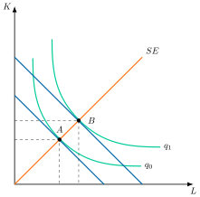
Función de costes
Finalmente, de la resolución del problema dual podemos obtener la función de costes (sustituyendo las funciones de demanda condicionadas en la función objetivo), que nos indica el coste mínimo dados unos precios de los factores y un volumen de producción: \[C\left(W,Q\right)\]
Posee las siguientes propiedades
Continua (para precios y niveles de producción positivos) y estrictamente positiva.
No decreciente en precios de los factores, estrictamente creciente en producción7. \[\dfrac{\partial C}{\partial w_{i}}\geq0\text{ con } \dfrac{\partial C}{\partial Q}>0\]
Homogénea de grado 1 en los precios de los factores, pues si todos los precios aumentan en la misma proporción, para seguir produciendo la misma cantidad de producto el coste debe aumentar en la misma proporción: \(t\cdot w_{1}\cdot x_{1}+t\cdot w_{2}\cdot x_{2}=t\cdot C\).
Cóncava en el precio de los factores, es decir, si el precio de un factor aumenta, el coste mínimo aumenta menos de lo que lo haría si la empresa mantuviera la combinación de factores inicial, puesto que el factor que se ha encarecido será parcialmente sustituido8. \[\dfrac{\partial^{2}C\left(w,X\right)}{\partial w^{2}}\leq0\]
Diferenciable.
Se aplica el Lema de Shephard, es decir, la derivada de la función de costes respecto a los precios de los factores será igual a la demanda condicionada de los factores \[\dfrac{\partial C}{\partial w_{i}}=h_{i}\left(W,Q\right) \tag{6.8}\]
Resuelve el problema de la integrabilidad, es decir, es posible asegurar que la función de costes proviene de la optimización de una función de producción. Por consiguiente, la función de costes contiene esencialmente la misma información que la función de producción.
Adicionalmente, si la función es homotética, se cumplirá que la función de costes será multiplicativamente separable, por lo que la función de costes puede ser escrita como: \(C(W,Q)=F(Q)\cdot C(W,1)\). Es decir, como el resultado de multiplicar una función estrictamente creciente en el output por el coste unitario de producir una unidad.
Variaciones en los precios de los factores
Antes de analizar el efecto del horizonte temporal, cabe preguntarse cómo responde el coste ante variaciones en los precios de los factores. Un incremento en el precio de un factor nunca puede reducir el coste total: si la sustitución de factores que provoca el encarecimiento redujese el coste, la empresa no estaría minimizando costes de partida. El impacto exacto depende de dos elementos: la elasticidad de sustitución entre factores –cuanto mayor sea, más fácil resulta sustituir el factor encarecido por otro más barato–, y el peso del factor en el coste total, medido por la elasticidad coste-precio propio, que aplicando el lema de Shephard resulta ser la proporción del gasto total destinada a dicho factor:
\[\varepsilon_{C,w_{i}}\equiv\dfrac{\partial C}{\partial w_{i}}\cdot\dfrac{w_{i}}{C}=\dfrac{x^{*}_{i}\cdot w_{i}}{C}\]
Así, si el trabajo representa el 10 % del coste total y su precio sube un 1 %, el coste total sube aproximadamente un 0,1 %. Además, por el teorema de la dualidad, en el óptimo las demandas condicionadas del problema dual coinciden con las demandas ordinarias evaluadas en el coste mínimo; derivando esta identidad respecto al precio de otro factor y aplicando de nuevo el lema de Shephard se obtiene una descomposición formalmente idéntica a la ecuación de Slutsky del consumidor:
\[\underbrace{\dfrac{\partial x_{i}\left(w,\bar{C}\right)}{\partial w_{j}}}_{\text{Efecto total}}=\underbrace{\dfrac{\partial h_{i}\left(w,\bar{Q}\right)}{\partial w_{j}}}_{\text{Efecto sustituci{ó}n}}-\underbrace{h_{j}\cdot\dfrac{\partial x_{i}\left(w,\bar{C}\right)}{\partial\bar{C}}}_{\text{Efecto renta}}\]
Esta descomposición permite clasificar cada factor como normal o inferior según el signo de la derivada de su demanda ordinaria respecto al coste, exactamente igual que en la teoría de la demanda del consumidor.
Análisis temporal de la función de costes
Una vez analizado el efecto de los precios, la teoría económica distingue además entre coste a corto plazo y a largo plazo, por lo que ahora se realizará un análisis temporal de la función de costes, en el cual sí vamos a considerar constantes los precios relativos de los factores.
Análisis de corto plazo
Comenzando por el corto plazo, este se define como el horizonte temporal en el que al menos un factor es fijo –normalmente es el capital– y el tamaño de planta se toma como dado. Además en el corto plazo existen:
Costes fijos, independientes del volumen de producción. Si los costes, además de ser fijos, son irrecuperables, entonces hablamos de costes hundidos.
Costes variables, aquellos que varían al modificar el volumen de producción.
Análisis gráfico
Gráficamente, en un plano de costes y cantidad producida como el de la Figura 6.3 se representan las diferentes curvas de costes:
Costes variables9, \(CV\),se representan a través de una S invertida10 que refleja la ley de rendimientos decrecientes o proporciones variables11.
Costes fijos12, \(CF\),son constantes al no depender de la producción, es decir, una línea horizontal.
Costes totales, \(CT\),la suma vertical de los 2 anteriores. \[CT=CV+CF \tag{6.9}\]
En el gráfico adyacente:
Coste marginal, \(CMg\), es el aumento del coste total que provoca producir una unidad adicional, y se obtiene en un plano adyacente trazando las tangentes a cada uno de los puntos de la función de costes total13. El coste marginal es el cociente entre el precio del factor variable y su productividad marginal, \(CMg=w/PMg\), de forma que el coste marginal es decreciente mientras los rendimientos marginales sean crecientes (mientras la curva de \(PMg\) tenga pendiente positiva), y el coste marginal se vuelve creciente cuando los rendimientos marginales se vuelven decrecientes (cuando la curva de \(PMg\) pase a tener pendiente negativa).
Coste fijo medio, \(CFMe\), decrece a medida que aumenta la producción pues se va diluyendo en esta.
Coste variable medio, \(CVMe\), decreciente hasta que es intersecado por el coste marginal, es decir, cada unidad de producto adicional tiene a partir de entonces un coste superior a la media, por lo que aumenta ésta. Otra manera de verlo es que el coste variable medio mínimo es el nivel de producción en el que el rayo vector del gráfico superior es tangente a la curva de coste variable14.
Coste total medio, es la suma vertical del coste variable y fijo medios. Cortado en su mínimo por \(CMg\), punto en el que coinciden las pendientes de la curva de \(CT\) y de la secante desde el origen.
Nótese cómo el coste variable medio y el coste total medio convergen a medida que aumenta la producción, porque se van diluyendo los \(CF\)15.
Además, vemos cómo la curva de costes totales medios tiene forma de U. Esto se debe a la ley antes enunciada de las proporciones variables, pues tras los rendimientos marginales crecientes iniciales, los rendimientos marginales se tornarán decrecientes, y llegará un punto en el que el aumento del producto debido a una unidad adicional de factor será tan pequeña, que el coste adicional de ese factor hará crecer el coste medio.
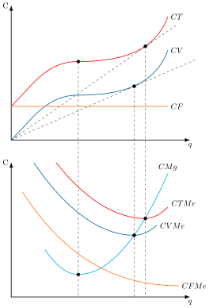
El conocimiento de los costes a corto plazo es especialmente importante para las empresas que producen en un entorno en el que las condiciones de demanda fluctúan constantemente.
Análisis de largo plazo
A diferencia del corto plazo, en el largo plazo se va a suponer que todos los factores son variables –excepto la tecnología que varía en el muy largo plazo– y que las empresas pueden elegir el tamaño de planta. En el largo plazo la función de costes es considerada una función de planificación, ya que para elegir el tamaño de planta se distinguen 2 fases
Primera fase, las empresas deberán estimar la demanda de producto futura y adaptar en consecuencia su capacidad de producción.
Segunda fase, decidirán sobre el tamaño de planta instalado.
Por lo tanto, el empresario es libre para decidir la dimensión óptima de la empresa que le permite minimizar los costes.
Análisis gráfico
Gráficamente, en un plano de costes y cantidad producida como el de la Figura 6.4, se representan las curvas de costes:
Costes a largo plazo, \(C_{l/p}\), envuelve las curvas de costes a corto plazo, ya que los costes a largo plazo siempre estarán por debajo (o serán iguales) de los costes a corto plazo.
Curva de coste medio a largo plazo, \(CMe_{l/p}\), (ya no hablamos de total y variable al no haber costes fijos) se deduce de las curvas de costes medios a corto plazo.
Este punto de tangencia se produce en la parte decreciente de las curvas de \(CMe_{c/p}\) en los puntos a la izquierda del mínimo de la curva de \(CMe_{l/p}\), y en la parte creciente de las curvas de \(CMe_{c/p}\) en los puntos a la derecha del mínimo de la curva de \(CMe_{l/p}\).
La razón económica es que en la parte izquierda la planta no trabaja a plena capacidad y a la derecha opera con sobrecarga (es decir, se trabajan horas extraordinarias que se pagan más caras, la maquinaria trabaja a velocidad antieconómica y se producen más averías, etc.). Únicamente en el punto mínimo del coste medio a largo plazo, la planta opera óptimamente en el corto plazo.
Sin embargo, la empresa únicamente observa la curva a corto plazo. La curva de coste a largo plazo es un concepto estratégico, no observable por la empresa. No corresponde con un tamaño físico de planta ni tiene correspondencia con la realidad16.Las curvas de \(CMg_{c/p}\) cortan a la curva de \(CMg_{l/p}\) en el nivel de producción para el cual sus respectivas curvas de \(CMe_{c/p}\) son tangentes a la curva de \(CMe_{l/p}\).
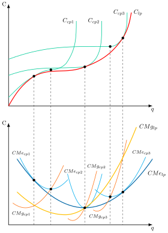
Como vemos, la curva de coste medio a largo plazo también tiene forma de \(U\), pero por una razón distinta a la del corto plazo: la empresa disfruta primero de economías de escala y, a partir de cierto tamaño, sufre deseconomías de escala, principalmente de gestión.17
Una explicación es que el tamaño de planta está diseñado para producir de manera óptima un determinado nivel de producción, de forma que cualquier desviación de este supuesto implica mayores costes unitarios. La planta es, pues, completamente inflexible, pues no existe ninguna capacidad de reserva.
Así, en el punto mínimo de los costes medios a largo plazo, éste es igual al \(CMg_{l/p}\), \(CMg_{c/p}\) y \(CMe_{c/p}\): \[CMe_{c/p}=CMe_{l/p}=CMg_{c/p}=CMg_{l/p} \tag{6.10}\]
Relación entre el corto y el largo plazo: teorema de Le Chatelier-Samuelson
Otra cuestión que observamos a partir del gráfico es que el tramo creciente de las curvas de coste marginal (el único que hemos representado) es más rígido en el caso de los costes a corto plazo que en el largo plazo. Esto es relevante porque en competencia perfecta, el tramo creciente de la curva de coste marginal a partir del umbral de producción es precisamente la curva de oferta.
Este resultado lo recoge el teorema de Le Chatelier-Samuelson (Samuelson 1947), que establece que las funciones de oferta de la empresa competitiva a corto plazo son más rígidas que la de largo plazo y tanto más rígida cuanto mayor es el número de factores considerados fijos18.
Gráficamente, como se observa en la Figura 6.5, partiendo de una asignación como \(A\), si la empresa en el corto plazo busca aumentar la producción de \(Q_{0}\) hasta \(Q_{1}\) la empresa deberá aumentar el factor variable, trabajo, hasta una asignación \(C\), con un nivel de costes superior al alcanzado si aumenta la producción a lo largo de su senda de expansión, alcanzando la asignación \(B\), con una curva isocoste asociada más cercana al origen y que supone un menor nivel de costes respecto al largo plazo.
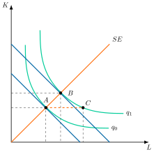
Economías de escala
Además del horizonte temporal, otro elemento clave para explicar la respuesta de los costes ante cambios en la producción son las economías de escala, que existen cuando el coste medio a largo plazo disminuye al aumentar la producción.19
Su medición se lleva a cabo a través de la elasticidad del coste total, \(\varepsilon_{c,q}\), que mide la variación porcentual del coste total ante la variación porcentual de la producción:
\[\varepsilon_{c,q}=\dfrac{\partial C}{\partial q}\cdot\dfrac{q}{C}=\dfrac{CMg}{CMe} \tag{6.11}\] donde, dependiendo de su valor
Si \(\varepsilon_{c,q}=1\) da lugar a economías de escala constantes –\(CMg=CMe\)–, donde el coste total varía en la misma proporción que la producción, es decir, el \(CMe\) es constante.
Si \(\varepsilon_{c,q}<1\) da lugar a economías de escala –\(CMg<CMe\)–, donde el coste total varía en menor proporción que la producción, es decir, el \(CMe\) es decreciente.
Si \(\varepsilon_{c,q}>1\) da lugar a deseconomías de escala –\(CMg>CMe\)–, donde el coste total varía en mayor proporción que la producción, es decir, el \(CMe\) es creciente.
Rendimientos crecientes a escala vs. economías de escala.
Ambos conceptos guardan una estrecha relación, probablemente porque la justificación económica de unos y otros es similar (es decir, las indivisibilidades y la especialización en el proceso productivo). Sin embargo, son dos conceptos diferentes ya que los rendimientos crecientes a escala es un concepto de la teoría de la producción y las economías de escala es un concepto de la teoría de los costes.
No obstante, ambos conceptos coinciden en el caso en que la función de producción sea homotética (pues en este caso, los costes y la producción tienen una relación imagen-espejo). En este tipo de funciones, la relación entre rendimientos a escala y economías de escala es inversa20: \[e=\dfrac{1}{\varepsilon_{c,q}}=\dfrac{CMe}{CMg} \tag{6.12}\] donde \(e\) es la elasticidad de escala.
Fuera del caso homotético, la senda de expansión deja de ser una recta desde el origen: la empresa que crece cambia las proporciones en que usa los factores, mientras que los rendimientos a escala se definen aumentando todos los factores en la misma proporción. Ambos conceptos describen entonces movimientos distintos, aunque en cada punto de la senda de expansión la elasticidad de escala sigue siendo igual al cociente \(CMe/CMg\) (Varian 1992).21
Economías de escala internas y externas
Conviene además distinguir las economías de escala internas, que resultan de la propia acción de la empresa al expandir su producción y quedan recogidas en la forma de su curva de costes, de las economías de escala externas (Alfred Marshall), que se producen a nivel de toda la industria –no de la tecnología o los costes de cada empresa individual– cuando el crecimiento del tamaño agregado del sector reduce el coste medio de todas las empresas que lo componen, por ejemplo a través de clústeres industriales, un mercado de trabajo más especializado o spillovers de conocimiento entre empresas próximas.
6.3 Críticas a la teoría tradicional 4'
La teoría tradicional ha sido cuestionada tanto por sus fundamentos teóricos como por sus implicaciones empíricas, sobre todo desde los autores de la teoría de la organización industrial. Antes de entrar en esas críticas, conviene explorar qué formas alternativas podría adoptar la curva de costes al margen de la U tradicional, y qué implicaciones tendrían para el mercado.
Curvas de costes sin rendimientos mixtos
Hasta aquí hemos analizado el caso tradicional de curvas en forma de U debido a la existencia de economías de escala primero y deseconomías después. A continuación, vamos a presentar en la Figura 6.6 otros casos en que hay economías de escala constantes, crecientes o decrecientes para cualquier nivel de producción:
Economías de escala constantes: el coste marginal coincide con el coste medio, por lo que la curva de coste medio será una recta. En competencia perfecta, la oferta a largo plazo sería igual al coste marginal, que a su vez sería igual al coste medio.
Economías de escala: el coste marginal va por debajo del coste medio. En competencia perfecta el precio será igual al coste marginal, pero éste estará por debajo del coste medio por la existencia de rendimientos crecientes. Por lo tanto, las empresas incurrirán en pérdidas, saldrán del mercado y no habrá producción. La única solución es la existencia de un monopolista natural que sea capaz de influir sobre el precio para elevarlo por encima del coste marginal.
Deseconomías de escala: el coste marginal va por encima del coste medio. En competencia perfecta, el precio será igual al coste marginal, pero éste estará por encima del coste medio por la existencia de rendimientos decrecientes. Por lo tanto, las empresas obtendrán beneficios, entrarán masivamente en el mercado y en el equilibrio habrá infinitas empresas, produciendo cada una cantidad infinitesimalmente pequeña.
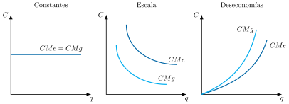
La teoría de los costes de Stigler
Stigler (1939) cuestiona la forma de U del coste medio ya que empíricamente se encuentra que el coste medio a largo plazo no es creciente y que el coste medio variable a corto plazo es constante para los niveles de producción usuales de la empresa y creciente cuando existe sobrecarga de trabajo. Así:
A corto plazo la curva de coste medio presenta un tramo horizontal.
A largo plazo la curva de costes medios no es creciente.
Análisis de corto plazo
En el corto plazo, Stigler señala que el empresario implementa un tamaño de planta que le otorgue flexibilidad debido a
Razones económicas, relacionadas con la demanda coyuntural y las fluctuaciones cíclicas como las reparaciones de maquinaria o la anticipación a cambios en los gustos de los consumidores.
Razones técnicas, relacionadas con la indivisibilidad del factor capital y la instalación de una reserva de capacidad que permita a la empresa hacer frente a una posible expansión futura22.
Gráficamente, en un plano de costes y cantidad producida como el de la Figura 6.7 se representan los diferentes costes:
En la curva de costes en forma de U se consideraba que el factor fijo no era divisible y, por lo tanto, se utilizaba desde el principio en la producción todo el factor fijo disponible. Así, la relación factor fijo / factor variable iba cambiando, y solamente existía una relación eficiente entre ambos, que era la óptima (mínimo del coste medio).
En la curva de costes con tramo horizontal se considera que el factor fijo es divisible, de tal forma que hasta que alcanza la capacidad total, se está utilizando una cantidad del factor fijo menor a la disponible. Así, si aumenta o disminuye la producción, el factor fijo y el variable aumentan o disminuyen en la misma proporción, manteniéndose la proporción eficiente entre ambos, de forma que los rendimientos marginales decrecientes no entran en juego hasta que se agota esa reserva de capacidad.
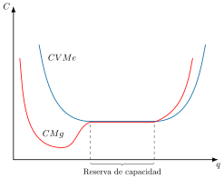
Análisis de largo plazo
En el largo plazo, la llamada teoría moderna de costes, sistematizada por Koutsoyiannis (1979) a partir de trabajos empíricos como los de Stigler, sostiene que los costes medios a largo plazo tienen forma de L, pues se dividen en
Costes de producción, que decrecen a medida que aumenta la producción. La escala óptima puede mejorar mediante innovaciones o produciendo varios productos diluyendo costes23.
Costes de administración, a escalas muy grandes serán ligeramente crecientes. No obstante, se argumenta que estas deseconomías de escala gerenciales son insignificantes debido a los métodos perfeccionados de la moderna ciencia de la administración de empresas24.
Gráficamente, en un plano de costes y cantidad producida como el de la Figura 6.8 se representan los diferentes costes.
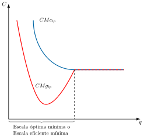
Así, el descenso de los costes de producción compensa con creces el probable aumento de los costes administrativos, de manera que la curva de \(CMe_{lp}\) decrece suavemente –algunos autores argumentan así que existirán economías de escala incluso en el largo plazo– o permanece constante –forma de L– para escalas de producción muy grandes.
La ineficiencia X de Leibenstein
Más allá de cuestionar la forma de la curva de costes, Leibenstein (1966) pone en duda la minimización del coste por parte de la empresa partiendo de los siguientes supuestos:
El esfuerzo es endógeno y es un mal para el trabajador.
Inercia: los trabajadores eligen su grado de esfuerzo según la costumbre, y solo lo modifican ante una presión externa considerable.
Los contratos son incompletos, es decir, no pueden prever todas las contingencias.
Existe información asimétrica, es decir, el productor no puede observar el nivel de esfuerzo realizado por el trabajador.
Por todo lo anterior, los trabajadores –que son los que deciden el nivel de esfuerzo a llevar a cabo–, escogerán por lo general un nivel de esfuerzo inferior al que minimizaría el coste medio. De esta manera, el comportamiento optimizador, es decir, la producción que minimiza el coste medio, es una excepción, produciéndose una ineficiencia X, es decir, la diferencia entre el coste en que realmente incurre la empresa y el mínimo que permitiría su tecnología, originada por ese menor esfuerzo.25
El grado de competencia juega un papel fundamental en la teoría de Leibenstein:
Con competencia alta, los trabajadores, en aras de asegurar la supervivencia de la empresa (y conservar, por tanto, su puesto de trabajo), se esforzarán y mejorarán su productividad marginal.
Con competencia baja, los trabajadores tendrán incentivos a relajarse. Así, un aumento de los precios del producto no tiene por qué traducirse en un mayor beneficio, ya que si los trabajadores perciben que ese aumento del precio de venta se debe a un mark-up posibilitado por una menor competencia, entonces el beneficio podría disminuir al aumentar los costes por la ineficiencia X.
Generalmente las empresas se mueven en un contexto de competencia imperfecta, por lo que la presión competitiva no motiva la diligencia en el trabajo.
Implicaciones de la teoría de la Ineficiencia X
Así, la aportación de Leibenstein tiene 2 implicaciones muy interesantes26:
Un incremento de los precios de los factores no supone necesariamente un aumento del coste total: La dirección transmitirá a los trabajadores la urgencia de realizar un mayor esfuerzo para reducir costes, con lo que la ineficiencia X disminuye.
No existe independencia entre el aumento de precios y el de costes: Si el aumento del precio viene posibilitado en un marco de menor competencia, entonces se producirá un aumento de costes vía una mayor ineficiencia X (a diferencia de la Teoría tradicional, que considera que el aumento del precio no tiene por qué implicar un aumento de los costes).
6.4 Otros desarrollos 2'30"
Otros desarrollos de la teoría de costes serían las economías de alcance, la subaditividad de costes y las curvas de aprendizaje
Producción multiproductos, economías de alcance
En la práctica, es frecuente que una misma empresa produzca dos o más productos. Existen economías de alcance (también denominadas de gama o de variedad)27 cuando producir esos bienes en una sola empresa cuesta menos que producirlos por separado en varias \[C\left(q_{1},q_{2}\right)<C\left(q_{1},0\right)+C\left(0,q_{2}\right) \tag{6.13}\]
En muchas ocasiones esto se debe a que los productos son dependientes desde el punto de vista técnico –por ejemplo carne y cuero en el caso del vacuno–, o porque se pueden aprovechar estructuras organizativas o de comercialización comunes.
Gráficamente en un plano de 2 bienes, \(q_{1}\) y \(q_{2}\), como el de la Figura 6.9, la restricción tecnológica (es decir, combinaciones técnicamente factibles) viene determinada por la Frontera de Posibilidades de Producción, \(FPP\), que expresa la máxima cantidad de un producto alcanzable, dada una cantidad producida del otro.
La \(FPP\) es cóncava ya que presenta economías de alcance, ya que si no las presentase sería una línea recta donde, por ejemplo, dada una cantidad de factores, produciendo \(q^{*}_{1}\) la empresa sin economías de gama puede producir \(q^{*}_{2}\), mientras que con los mismos factores la empresa con economías de gama puede producir más en \(q^{**}_{2}\).
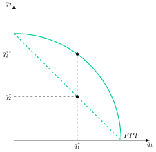
Cabe subrayar que no existe una relación directa entre las economías de escala y las de gama.
Relación con el coste de producción de bienes
Otra forma de ver las economías de alcance es mediante la relación entre el coste total de producir un bien en términos del otro. Así, se daría una curva de pendiente negativa que en función de la forma mostraría la presencia de economías de alcance:
Si la representación es cóncava, existen economías de alcance pues el coste de producir dos bienes conjuntamente es menor que el de producirlos por separado.
Si es una línea recta demuestra la no existencia de economías de alcance.
Si es convexa entonces muestra la presencia de deseconomías de alcance.
Grado de economías de alcance
Para cuantificar el ahorro anterior, el grado de economías de alcance, \(EA\), permite medir el porcentaje de ahorro de costes que se obtiene cuando dos o más productos se producen conjuntamente en lugar de individualmente \[EA=\dfrac{C\left(q_{1}\right)+C\left(q_{2}\right)-C\left(q_{1},q_{2}\right)}{C\left(q_{1},q_{2}\right)} \tag{6.14}\]
Cuando hay economías de alcance, el coste conjunto es menor que la suma de los costes individuales, por lo que \(EA\) es mayor que 0. Cuando hay deseconomías de alcance, \(EA\) es negativo. En general, cuanto mayor es el valor de \(EA\), mayores son las economías de alcance.
Subaditividad de costes
Cerrando los desarrollos sobre producción multiproducto, se dice que una tecnología presenta subaditividad estricta en costes si resulta menos costoso producir un output dado en una sola empresa que repartiéndolo entre varias \[C\left(\sum\limits_{i=1}^{n}q_{i}\right)<\sum\limits_{i=1}^{n}C_{i}\left(q_{i}\right) \tag{6.15}\] En esta situación, la subaditividad de costes genera lo que se conoce como monopolio natural28, ya que cualquier cantidad ofrecida de equilibrio sería menos costosa producirla en una sola empresa, y solo una podría obtener beneficios.
Gráficamente, en un plano de costes medios, \(CMe\), y cantidad producida, \(q\), como el de la Figura 6.10 se representa la curva de costes medios cuando toda la producción se concentra en una empresa, \(CMe_{1}\), y la de dos empresas que se reparten la producción a medias, \(CMe_{1+2}\). Pero la subaditividad se extiende hasta \(q_{1}\) a pesar de que existe un tramo con deseconomías de escala. En efecto, aunque en el tramo que va desde \(q_{0}\) hasta \(q_{1}\) existen deseconomías de escala, el coste medio de concentrar la producción en una empresa es menor que el de repartirla en dos empresas. A partir de \(q_{1}\) ya no existe subaditividad de costes y, por lo tanto, no hay monopolio natural.
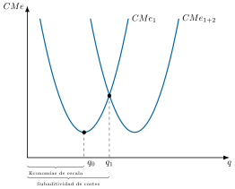
Por consiguiente, la existencia de Economías de escala es condición suficiente pero no necesaria para la existencia de subaditividad de costes. De hecho, pueden existir deseconomías de escala, y que el coste medio de concentrar la producción en una empresa sea menor que el de repartirla en dos empresas (como sucede entre \(q_{0}\) y \(q_{1}\)). A partir de \(q_{1}\) deja de existir subaditividad de costes.
Monopolio natural
La subaditividad de costes genera estructuras de mercado con la existencia de un monopolio natural.
Economías de aprendizaje
Por último, la empresa no solo es capaz de reducir los costes medios a largo plazo cuando aumenta el volumen de producción y se van explotando las economías de escala.
De hecho, la empresa puede ir reduciendo costes gracias a las economías de aprendizaje o de escala dinámicas derivadas del aprendizaje del trabajador y de la gestión, fenómeno que se produce conforme crece la producción acumulada en el tiempo por
Mayor rapidez y habilidad de los trabajadores, ya que a medida que son más expertos su velocidad aumenta.
Mayor eficiencia en la gestión, donde los directivos aprenden a programar el proceso de producción más eficazmente, desde el flujo de materiales hasta la organización de la propia producción.
Los ingenieros que al principio son muy cautos en el diseño de los productos pueden adquirir suficiente experiencia para poder introducir tolerancias en el diseño que ahorren costes sin aumentar los defectos. La mejora y el aumento de las herramientas especializadas y de la organización de la planta también pueden reducir el coste.
Visión más integrada de la empresa, donde también los proveedores pueden aprender y contribuir a la reducción del coste de la empresa.
Gráficamente, en un plano de trabajo necesario por unidad de producción, \(L/Q\), y de producción acumulada en el tiempo, \(Q_{AC}\), como el de la Figura 6.11, se representa la curva de aprendizaje, \(C_{AP}\), que muestra el grado en que disminuyen las horas necesarias de trabajo por unidad de producción a medida que aumenta la producción acumulada
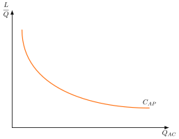
A su vez, dentro de la Teoría del Comercio Internacional las economías de escala dinámicas han servido para justificar la protección temporal frente a la competencia exterior en lo que se conoce como el argumento de la industria naciente.
Economías de escala vs. economías de aprendizaje
Gráficamente, en un plano de costes medios y cantidad de producción como el de la Figura 6.12, la diferencia es que las economías de escala se presentarían del punto inicial \(A\) al punto \(B\), es decir, reducción de costes sobre la misma curva, mientras que las economías de aprendizaje se presentarían del punto \(A\) al \(C\), es decir, el mismo nivel de producción pero con menor coste.
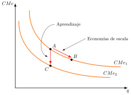
6.5 Conclusiones 30"
Como conclusión, la teoría de costes es un componente fundamental a la hora de entender el comportamiento de las empresas y los aspectos relevantes de la tecnología de producción. Del mismo modo, la teoría de costes también aporta información sobre cómo va a funcionar un mercado, sirviendo así como una guía para las políticas de competencia.
Así, la estructura de costes de las empresas puede pre-configurar en gran medida la estructura del mercado; es el caso, por ejemplo, de la subaditividad de costes y el monopolio natural.
Esta lectura neoclásica admite matices: Stigler cuestiona empíricamente la forma de U de la curva de costes, y la ineficiencia X de Leibenstein liga el coste mínimo a la presión competitiva; a ello se suman desarrollos como el alcance, la subaditividad y el aprendizaje, que acercan el análisis a la empresa real.
No obstante, la teoría de los costes no termina de caracterizar las decisiones de oferta de producto y de demanda de factores de la empresa. Para ello es necesario acudir a la teoría de los mercados para ver cuál de todas las combinaciones técnica y económicamente eficientes (es decir, todas las combinaciones que se recogen en la senda de expansión) es la óptima.
Apéndice
6.A.1. Rendimientos crecientes a escala vs. economías de escala
Ambos conceptos guardan una estrecha relación, probablemente porque la justificación económica de unos y otros es similar –es decir, las indivisibilidades y la especialización en el proceso productivo–. Sin embargo, son dos conceptos diferentes:
Rendimientos crecientes a escala (concepto de la teoría de la producción): al aumentar la dotación de los factores en la misma proporción, la producción aumenta en una proporción mayor29.
Economías de escala (concepto de la teoría de los costes): al aumentar la producción, los costes totales aumentan menos que proporcionalmente. Efectivamente, para aumentar la producción se ha tenido que aumentar la dotación de factores, pero no necesariamente en la misma proporción.
No obstante, ambos conceptos coinciden en el caso en que la función de producción sea homotética, pues en este caso los costes y la producción tienen una relación imagen-espejo. En este tipo de funciones, la relación entre rendimientos a escala y economías de escala es inversa: \[e=\dfrac{1}{\varepsilon_{c,q}}=\dfrac{CMe}{CMg}\]
Relación entre rendimientos y economías de escala para funciones NO homotéticas
Pero, fuera del caso homotético, la senda de expansión deja de ser un rayo desde el origen, de modo que crecer por ella y escalar todos los factores en la misma proporción son movimientos distintos. Aun así, en cada punto de la senda de expansión la elasticidad de escala coincide con el cociente \(CMe/CMg\), de modo que los rendimientos a escala medidos en la combinación que minimiza costes y las economías de escala siguen yendo de la mano30. Para funciones homogéneas de grado \(HG\): \[\begin{align*} HG=1\;\Leftrightarrow\;\text{Rendimientos constantes}\;\Leftrightarrow\;\text{CMe constante}\\ HG>1\;\Leftrightarrow\;\text{Rendimientos crecientes}\;\Leftrightarrow\;\text{Econom{í}as de escala}\\ HG<1\;\Leftrightarrow\;\text{Rendimientos decrecientes}\;\Leftrightarrow\;\text{Deseconom{í}as de escala} \end{align*}\]
6.A.2. Funciones de costes resultantes de otras funciones de producción
A continuación se presentan las funciones típicas de coste en el caso de que prevalezcan en el largo plazo rendimientos constantes, crecientes o decrecientes, suponiendo constantes los precios de los factores productivos, ilustrando cada caso con una tecnología distinta.
Rendimientos constantes de escala a largo plazo —tecnología Leontief, \(Q=\min\{aX_{1},bX_{2}\}\), homogénea de grado 1 por construcción—: la curva de \(C_{lp}\) es una línea recta que pasa por el origen: \(C_{lp}=Q\left(\dfrac{w_{1}}{a}+\dfrac{w_{2}}{b}\right)\). Así, el \(CMe_{lp}\) al igual que el \(CMg_{lp}\) equivalen al coste unitario \(\left(\dfrac{w_{1}}{a}+\dfrac{w_{2}}{b}\right)\), ambas horizontales e iguales entre sí.
Rendimientos crecientes de escala a largo plazo —tecnología de sustitutos perfectos elevada a una potencia \(k>1\), \(Q=(aX_{1}+bX_{2})^{k}\), homogénea de grado \(k\) y, por tanto, homotética (Varian 1992)—: el núcleo \(Z=aX_{1}+bX_{2}\) sigue siendo de sustitutos perfectos, así que el coste de conseguir \(Z\) unidades es \(Z\cdot\min\{w_{1}/a,\,w_{2}/b\}\). Sustituyendo \(Z=Q^{1/k}\) se obtiene \(C_{lp}=Q^{1/k}\min\{w_{1}/a,\,w_{2}/b\}\), con exponente \(1/k<1\): el \(CT_{lp}\) crece a una tasa decreciente y el \(CMe_{lp}\) tiene pendiente negativa. Por ello, el mínimo de los \(CMe_{cp}\) nunca coincide con el mínimo del \(CMe_{lp}\), y en mercados competitivos las plantas operan a largo plazo en un nivel de producción inferior a aquel en el que su \(CMe_{cp}\) es mínimo.
Rendimientos decrecientes de escala a largo plazo —tecnología Cobb-Douglas, \(Q=AX^{a}_{1}X^{b}_{2}\) con \(a+b<1\)—: la función de costes asociada es \(C_{lp}=Ky^{1/(a+b)}\), con exponente \(1/(a+b)>1\), por lo que el \(CT_{lp}\) aumenta más que proporcionalmente respecto al nivel de producción. En este caso a la empresa le conviene arrendar una planta con capacidad menor, pues el mínimo a corto plazo se encuentra por debajo del punto de tangencia entre los \(CMe_{cp}\) y los \(CMe_{lp}\).
En definitiva, cada tecnología deja una huella distinta en la curva de \(CMe_{lp}\) y en la de \(C_{lp}\) (Varian 1992; Koutsoyiannis 1979):
Leontief (rendimientos constantes): \(CMe_{lp}\) constante —recta horizontal—; \(C_{lp}\) recta que pasa por el origen.
Sustitutos perfectos elevados a \(k>1\) (rendimientos crecientes): \(CMe_{lp}\) decreciente; \(C_{lp}\) cóncava —crece a tasa decreciente—.
Cobb-Douglas con \(a+b<1\) (rendimientos decrecientes): \(CMe_{lp}\) creciente; \(C_{lp}\) convexa —crece a tasa creciente—.
Nótese que las tres funciones comparten una misma lógica: el grado de homogeneidad de la tecnología (1, \(k\) o \(a+b\), según el caso) determina directamente si \(C_{lp}\) crece proporcionalmente, a tasa decreciente o a tasa creciente respecto a \(Q\)—y con ello la pendiente de \(CMe_{lp}\). Sin embargo, ninguna de ellas genera por sí sola los rendimientos mixtos —economías de escala primero, deseconomías después— que dan lugar a la forma de U de la teoría tradicional (véase “Análisis de largo plazo”): al tener una elasticidad de escala constante en todo punto, solo pueden dar una curva monótona o plana. Los rendimientos mixtos surgen, bien como envolvente de curvas de corto plazo con economías de escala primero y deseconomías de gestión después (Koutsoyiannis 1979), bien de formas funcionales más flexibles —como la función de costes translogarítmica— capaces de representar una elasticidad de escala que varía con el nivel de producción.
6.A.3. Economías de aglomeración
Las economías de aglomeración son los beneficios o reducciones de costes que las empresas y las personas obtienen al concentrarse geográficamente. Este concepto se enmarca dentro de la teoría de costes al explicar por qué la producción es más barata en áreas urbanas o "clusters" industriales, a pesar de los altos precios del suelo y la congestión.
Tipos de economías de aglomeración
Existen dos tipos principales que contribuyen a la reducción de costes:
Economías de localización: Se producen cuando empresas de un mismo sector se concentran en una misma zona. Los beneficios incluyen un mercado laboral especializado, acceso a proveedores específicos y la facilidad para compartir conocimiento e innovación (efectos de derrame tecnológico).
Economías de urbanización: Ocurren cuando una gran variedad de industrias se concentran en un área metropolitana. Los beneficios provienen del acceso a una infraestructura compartida (carreteras, telecomunicaciones), una gran diversidad de servicios y un mercado laboral amplio y variado.
Costes de transporte y aglomeración
La teoría de costes explica que las empresas se localizan en una aglomeración para minimizar los costes de transporte. Al ubicarse cerca de proveedores de materias primas y de un gran mercado de consumidores, las empresas reducen los gastos asociados al traslado de materias primas y productos finales.
La reducción o el bajo nivel de los costes de transporte es un factor clave que impulsa la concentración de la actividad económica. Sin embargo, la aglomeración también puede generar deseconomías de aglomeración, como la congestión del tráfico o la competencia por los recursos, que a su vez limitan el crecimiento de las ciudades.
6.A.4. Costes hundidos
Los costes hundidos (del inglés, sunk costs) son gastos que ya se han realizado y que no se pueden recuperar de ninguna manera. Son costes retrospectivos e irreversibles31.
Relación con la teoría de costes
La teoría económica de la decisión racional establece que los costes hundidos son completamente irrelevantes para la toma de decisiones futuras. Una decisión solo debe basarse en los costes y beneficios marginales futuros.
El problema surge con la falacia del coste hundido, un sesgo cognitivo que lleva a los individuos o a las empresas a continuar invirtiendo en un proyecto o actividad que no es viable, simplemente porque ya han gastado una cantidad significativa de dinero en él. Por ejemplo, una empresa que invierte millones en una nueva fábrica y, a mitad de la construcción, se da cuenta de que la demanda del producto ha desaparecido, debe abandonar el proyecto. El coste de la construcción ya realizada es un coste hundido y no debe influir en la decisión de continuar o no.
En la teoría de costes, la distinción clave es entre los costes hundidos y los costes de oportunidad. Los costes de oportunidad representan los beneficios perdidos por elegir una alternativa en lugar de otra y son esenciales para una decisión racional, mientras que los costes hundidos, al ser irrecuperables, no lo son.
Implicaciones de política económica
El concepto de costes hundidos tiene varias implicaciones importantes para la política y la economía:
Barreras de entrada: Los grandes costes hundidos pueden actuar como una barrera de entrada al mercado. Si la inversión inicial requerida para entrar en una industria es muy alta y no es recuperable (por ejemplo, la inversión en publicidad de una marca conocida o en I+D), desanimará a los nuevos competidores, lo que puede llevar a una estructura de mercado de monopolio u oligopolio.
Proyectos públicos y la falacia del coste hundido: La falacia del coste hundido es particularmente relevante en el sector público. Los gobiernos a menudo se sienten presionados a continuar financiando proyectos de infraestructura (como aeropuertos o trenes de alta velocidad) que ya han costado miles de millones, incluso cuando los análisis de coste-beneficio sugieren que el proyecto es un fracaso y que la mejor opción sería abandonarlo. La política económica racional dicta que, si los beneficios futuros esperados de un proyecto son inferiores a los costes futuros esperados, el proyecto debe ser detenido, independientemente de la inversión ya realizada.
Regulación: Las autoridades de competencia y los reguladores tienen en cuenta los costes hundidos al evaluar la dinámica de un mercado. Por ejemplo, al considerar la concesión de licencias o la asignación de espectro radioeléctrico, se puede buscar que el coste hundido sea el adecuado para atraer a competidores sin que sea un freno para la entrada de nuevas empresas.
6.A.5. Tipos de economía de escala
Las economías de escala son ventajas que obtiene una empresa al aumentar su volumen de producción, lo que permite reducir el coste medio por unidad. Estas ventajas pueden surgir tanto de factores internos como externos, y se clasifican en varios tipos según su origen y naturaleza.
Economías de escala internas
Son aquellas que se generan dentro de la empresa como resultado de su crecimiento:
Técnicas: Al aumentar la producción, se pueden utilizar máquinas más eficientes o automatizar procesos. Por ejemplo, una fábrica que produce más unidades puede justificar la inversión en tecnología avanzada que reduce el coste por unidad.
Gerenciales: La especialización de funciones permite una gestión más eficiente. A medida que la empresa crece, puede contratar personal especializado en áreas como logística, finanzas o recursos humanos, lo que mejora la productividad.
Financieras: Las empresas grandes suelen tener acceso a mejores condiciones de financiación, como tipos de interés más bajos o mayor capacidad de negociación con inversores.
Comerciales: Al comprar en grandes volúmenes, las empresas pueden obtener descuentos por parte de proveedores. Además, pueden negociar mejores condiciones de distribución o publicidad.
Administrativas: Algunos costes fijos, como los de oficina o software, se reparten entre más unidades producidas, reduciendo el coste por unidad.
Economías de escala externas
Estas provienen del entorno o del crecimiento del sector en el que opera la empresa:
De concentración geográfica: Cuando varias empresas del mismo sector se agrupan en una región, se benefician de infraestructura compartida, proveedores especializados y un mercado laboral adaptado. Ejemplo: el distrito tecnológico de Silicon Valley.
Del mercado laboral: En zonas con alta concentración de una industria, es más fácil encontrar trabajadores cualificados, lo que reduce costes de formación y mejora la eficiencia.
Conviene no confundirlas con los efectos de red, en los que el valor de un producto para cada usuario aumenta con el número de usuarios (redes sociales o plataformas de comercio electrónico). Se trata de economías del lado de la demanda, no de reducciones de costes.
Otras clasificaciones
Reales vs. pecuniarias:
Reales: Reducción de costes físicos, como el uso más eficiente de maquinaria.
Pecuniarias: Reducción de costes por obtener mejores precios en materias primas o servicios.
Estáticas vs. dinámicas:
Estáticas: Derivan del tamaño actual de la empresa.
Dinámicas: Surgen del aprendizaje acumulado y la mejora continua en procesos.
Ejemplos prácticos
Una empresa automovilística que produce 100.000 vehículos al año puede negociar precios más bajos por neumáticos que una que produce solo 5.000.
Una cadena de supermercados puede distribuir sus costes de publicidad entre cientos de tiendas, mientras que una tienda independiente debe asumirlos sola.
En el sector tecnológico, plataformas como Amazon o Google se benefician de economías de red, donde cada nuevo usuario aporta valor adicional al sistema.
6.A.6. Aplicaciones empíricas: el análisis envolvente de datos (DEA) y la frontera estocástica
Todo lo anterior se ha desarrollado en términos puramente teóricos, a partir de una función de producción supuesta de antemano. Cabe preguntarse cómo se traslada este aparato a la práctica: ¿cómo puede un regulador o un investigador medir, con datos reales, si una empresa concreta está siendo eficiente, sin necesidad de conocer directamente su función de producción o de costes? La literatura utiliza esencialmente dos estrategias:
El análisis de frontera estocástica (Stochastic Frontier Analysis, SFA): estima los parámetros de una función de costes de forma paramétrica –eligiendo previamente una forma funcional concreta– y descompone, mediante técnicas econométricas, la distancia de cada empresa a la frontera eficiente en un componente aleatorio y un componente de ineficiencia.32 Requiere una notable disponibilidad de datos.
El Análisis Envolvente de Datos (Data Envelopment Analysis, DEA): una estrategia no paramétrica y más flexible, que consiste en "envolver" las observaciones disponibles mediante la resolución de un problema de optimización lineal, sin necesidad de imponer a priori ninguna forma funcional a la tecnología (Coelli 1996).
Dada su mayor flexibilidad y menor exigencia de información, el DEA es el método más utilizado en la práctica. Considérese, por simplicidad, un caso con dos factores \((x_{1},x_{2})\) y un único output \(Y\), de modo que cada punto de un plano \((x_{1}/Y,x_{2}/Y)\) representa a una empresa observada. El DEA plantea un problema de optimización lineal para trazar una frontera eficiente que maximice la eficiencia de cada empresa observada y delimite un conjunto convexo que contenga a todas las observaciones.
Las empresas que no se sitúan sobre la frontera son, por definición, técnicamente ineficientes. Considérese una empresa \(A\) situada fuera de la frontera: trazando una recta desde el origen hasta \(A\), su intersección con la frontera eficiente define un punto \(b\), y la intersección de esa misma recta con la curva de isocoste define un punto \(c\). A partir de estas distancias se obtienen tres indicadores, acotados entre 0 (máxima ineficiencia) y 1 (máxima eficiencia):
Eficiencia técnica\(=Ob/OA\): en qué medida la empresa podría reducir sus inputs manteniendo el mismo output.
Eficiencia asignativa\(=Oc/Ob\): si, conocidos los precios de los factores, la combinación empleada es la óptima.
Eficiencia económica\(=\) eficiencia técnica \(\times\) eficiencia asignativa.
El DEA admite además opciones metodológicas relevantes: puede orientarse a minimizar inputs dado el output, o a maximizar el output dados los inputs (equivalentes solo bajo rendimientos constantes a escala); puede suponer rendimientos constantes o variables a escala; y, con datos de panel, puede calcularse un índice de Malmquist de productividad total de los factores para el análisis dinámico33.
En aplicaciones reales, el DEA se ha utilizado extensamente para medir la eficiencia de operadores de transporte en autobús: Venkatesh y Kushwaha (2018) estudian la eficiencia económica de empresas de autobuses en la India, encontrando ineficiencias significativas; Odeck (2006) estima el impacto de la congestión, el tipo de propiedad, la escala y la localización sobre la eficiencia de operadores noruegos; y Karlaftis (2004) evalúa operadores urbanos en Estados Unidos, encontrando que la mayoría opera bajo rendimientos decrecientes a escala.
6.A.7. La función de costes translogarítmica
Como ya se ha señalado, las funciones de coste vistas hasta ahora —Leontief, sustitutos perfectos, Cobb-Douglas— imponen de antemano una elasticidad de sustitución fija entre factores y una elasticidad de escala constante en todo punto. La función de costes translogarítmica (transcendental logarithmic), propuesta por (Christensen et al. 1973), es una forma funcional flexible que no impone ninguna de las dos restricciones a priori: es una aproximación de segundo orden al logaritmo de la función de costes,
\[\ln C(w,y)=\alpha_{0}+\sum_{i}\alpha_{i}\ln w_{i}+\alpha_{y}\ln y+\frac{1}{2}\beta_{yy}(\ln y)^{2}+\sum_{i}\beta_{iy}\ln w_{i}\ln y+\frac{1}{2}\sum_{i}\sum_{j}\beta_{ij}\ln w_{i}\ln w_{j}\]
sujeta a las restricciones de simetría \(\beta_{ij}=\beta_{ji}\) y de homogeneidad de grado 1 en precios, \(\sum_{i}\alpha_{i}=1\), \(\sum_{j}\beta_{ij}=0\,\forall i\), \(\sum_{i}\beta_{iy}=0\) (Varian 1992).
Por el Lema de Shephard, las participaciones de cada factor en el coste total son lineales en los parámetros,
\[s_{i}(w,y)=\alpha_{i}+\sum_{j}\beta_{ij}\ln w_{j}+\beta_{iy}\ln y,\]
lo que permite estimar el sistema completo (función de costes + ecuaciones de participación) econométricamente sin imponer la forma de la tecnología subyacente.
Caso particular
Si \(\beta_{ij}=0\) para todo \(i,j\), \(\beta_{iy}=0\) y \(\beta_{yy}=0\), la translog se reduce exactamente a una Cobb-Douglas —es la única de las tecnologías vistas en 6.A.2 que queda anidada de forma exacta—. Leontief y sustitutos perfectos no lo están: por su carácter de aproximación local de segundo orden a una tecnología arbitraria, la translog puede aproximar su comportamiento en el entorno de un punto dado, pero no los reproduce de forma exacta y global (para eso existe una forma funcional flexible distinta, la Leontief generalizada de Diewert).
Por qué sí genera rendimientos mixtos
A diferencia del caso restringido anterior, cuando \(\beta_{yy}\) y \(\beta_{iy}\) son distintos de cero la elasticidad de escala deja de ser constante y pasa a depender del nivel de producción —precisamente la propiedad que Leontief, Cobb-Douglas y sustitutos perfectos no podían ofrecer en 6.A.2—, permitiendo generar de forma nativa una curva de \(CMe_{lp}\) en U sin necesidad de recurrir a la envolvente de curvas de corto plazo.
Aplicación empírica
Caves et al. (1984) la emplean para separar economías de densidad de economías de escala en el sector aéreo estadounidense, encontrando economías de densidad sustanciales —clave para explicar la eficiencia de las redes en estrella (hub-and-spoke)— frente a economías de escala mucho más limitadas a nivel de red completa.
Términos del glosario de este tema
36 términos · ver el glosario completo
Bibliografía
La empresa se enfrenta a tres tipos de restricciones: técnicas, estudiadas por la teoría de la producción; económicas, estudiadas por la teoría de costes; y de mercado, estudiadas por la teoría de la organización industrial.↩︎
Los costes, definidos como el gasto realizado para la adquisición o producción de un bien o servicio, se distinguen entre los
Costes contables, aquellos obtenidos de la aplicación de convenciones que permiten la obtención de los estados de resultados de la empresa válidos para cuestiones fiscales y de contabilidad de la empresa.
Costes económicos, ligados al uso de recursos económicos para la producción, que incluyen el coste de oportunidad, es decir, el valor de la mejor alternativa a la que la empresa renuncia al destinar sus recursos a un uso concreto.
En este tema nos vamos a centrar en la teoría de los costes (es decir, en las restricciones económicas a las que se enfrenta la empresa), muy importante para:
Completar las decisiones de producción de la empresa, pues el concepto de eficiencia técnica analizado en la teoría de la producción no es suficiente para caracterizar la decisión de la empresa.
Determinar la estructura de mercado, pues la estructura de costes es uno de los factores determinantes de la estructura de mercado.
La intuición es que, si una empresa con más presupuesto pasa de una técnica artesanal a otra automatizada, puede acabar usando menos trabajo poco cualificado aunque su coste total haya aumentado. Ese factor se comporta como inferior.↩︎
No obstante, el punto exacto de la senda de expansión en el que se sitúe la empresa nos lo mostrará la teoría de los mercados.↩︎
La senda de expansión puede ser una curva o una recta (en las funciones homotéticas –por ejemplo, Cobb-Douglas– es siempre una recta), pero siempre será una isoclina (pues une puntos con la misma pendiente, concretamente con pendiente \(\text{–} w_{i}/w_{j}\)).↩︎
No decreciente en “\(w_{i}\), \(w_{j}\)” y estrictamente creciente en “Q” (ya que, si con el mismo coste pudiésemos conseguir más producción, no estaríamos maximizando beneficios).↩︎
El incremento del coste será mayor cuanto menor sea la sustituibilidad de los factores (es decir, cuanto menor sea la elasticidad de sustitución de los factores, \(\sigma\)). Una alta elasticidad de sustitución implica, pues, una mayor concavidad (y por ende menor será el efecto de los cambios en el precio de un factor sobre el coste total).↩︎
Los costes variables incluyen los costes de materias primas, de mano de obra directa y los gastos de funcionamiento, tales como combustibles, reparaciones ordinarias y mantenimiento rutinario.↩︎
Ello se debe a que inicialmente el factor variable genera rendimientos marginales (es decir, \(PMg\)) crecientes (es decir, coste marginal decreciente), pero llegado un punto el factor variable genera rendimientos marginales decrecientes (es decir, coste marginal creciente).↩︎
La ley de las proporciones variables, enunciada por Turgot en 1767 como respuesta teórica a un ensayo fisiócrata sobre la agricultura francesa. De acuerdo con esta ley, dado un factor fijo (digamos, tierra), las primeras unidades del factor variable (trabajo) aumentan la producción cada vez más, por lo que el coste marginal es inicialmente decreciente (y la curva de costes, cóncava), pero llegará un punto en que cada unidad adicional añadirá menos producción que la anterior, y el coste marginal pasará a ser creciente (la curva de costes se vuelve convexa).↩︎
Los costes fijos incluyen los sueldos de personal fijo –generalmente personal administrativo–, depreciación de maquinaria, gastos de amortización de edificios y reparaciones y gastos de mantenimiento y reparación de los terrenos –si estos existen–. Además, otro elemento que puede ser tratado como un coste fijo es el beneficio normal, que retribuye tanto el capital aportado como la asunción de riesgos.↩︎
Como se trata de una derivada, gráficamente se obtiene trazando las tangentes a cada uno de los puntos de la función de coste variable o de coste total (ya que ésta se obtiene desplazando paralelamente el coste variable por el coste fijo); los ángulos van disminuyendo hasta el punto de inflexión y a partir de ahí empiezan a crecer pasando por el mínimo del coste medio variable y del coste medio total, ya que para esos niveles de producción la tangente (que, como veíamos, determina el coste marginal) coincide con la secante (es decir, con el rayo vector, que determina el coste medio).↩︎
Si, aprovechando el gráfico, vamos más allá de la teoría de los costes y nos adentramos en la teoría de los mercados, podemos añadir que el mínimo del coste variable medio se denomina mínimo de explotación, pues si suponemos competencia perfecta, en ese punto los ingresos cubren los costes variables, por lo que la empresa estará indiferente entre producir y cerrar ya que en ambos casos pierde los costes fijos. El mínimo de explotación se corresponde con el margen extensivo u óptimo técnico de la teoría de la producción.
Es importante no hablar en el presente tema de “mínimo de explotación”, “competencia perfecta”, “beneficios”, “pérdidas”, “oferta”, “precios del producto”, etc., pues suponen ir un paso más allá ya que todos ellos son términos propios de la teoría de los mercados (y, si se utilizan para aprovechar el gráfico y extender la explicación, dejar claro que eso no es teoría de costes, sino un siguiente nivel de análisis: la teoría de los mercados)↩︎
Aprovechando de nuevo el gráfico para adentrarnos en la teoría de los mercados, podemos añadir que el mínimo del coste total medio se denomina óptimo de explotación o umbral de beneficio, pues si suponemos competencia perfecta, en ese punto los ingresos cubren todos los costes, por lo que a partir de ahí se generarán beneficios positivos. A diferencia del mínimo de explotación, el óptimo de explotación no puede asociarse a un punto concreto de la función de producción, pues el mínimo del coste total medio depende también de los costes fijos. Se sitúa siempre dentro de la fase II.↩︎
Cuestiones sobre el largo plazo: Es un horizonte de planificación. La empresa hace su planificación de demanda esperada y elige el tamaño de planta y factores productivos óptimos que va a necesitar para maximizar beneficio. No obstante, una vez tomada la decisión y adquirido el capital, este se vuelve fijo y la actividad se produce en el corto plazo. Es decir, el largo plazo se compone de situaciones del corto plazo que la empresa puede elegir. Supone que la función de producción es continua, implica que los factores productivos son perfectamente divisibles, por consiguiente, hay infinitos tamaños de planta, aunque en realidad se dan solamente unos pocos procesos tecnológicos.↩︎
La intuición es que a largo plazo no queda ningún factor fijo con el que “saturar” al factor variable. Lo que encarece la producción de una planta gigantesca no es la falta de espacio, sino la dificultad creciente de coordinarla.↩︎
La intuición es que en el corto plazo, al ser al menos uno de los factores productivos fijo, la capacidad de adaptación de la empresa a la nueva estructura de precios es menor ya que el cambio de la cantidad ofertada solo puede realizarse variando alguno de los factores que sí son variables.↩︎
La intuición es que imprimir diez mil ejemplares de un libro cuesta mucho menos por ejemplar que imprimir cien, porque la preparación de la imprenta se reparte entre más unidades.↩︎
ver más en el anexo↩︎
La intuición es que una empresa que minimiza costes ya ha elegido la mejor combinación de factores, así que, a partir de ella, crecer escalando todos los factores o hacerlo por la senda óptima tiene, en el margen, el mismo coste.↩︎
No se debe confundir la reserva de capacidad con el exceso de capacidad de la teoría tradicional. La reserva de capacidad está planificada por el empresario, y el exceso de capacidad lo puede determinar el mercado, pero no está planificado. En la teoría tradicional, se diseña la empresa para producir de forma optima en el mínimo de los costes medios variables y si se produce antes del mínimo, aparece el exceso de capacidad. Sin embargo, la reserva de capacidad se planifica y supone costes constantes.↩︎
El hecho de que las \(CMe\) disminuyan de forma continua implica la existencia de economías de escala técnicas, pero que se agotan a partir de un punto que llamamos escala mínima eficiente (o escala óptima mínima). Pese a todo, aún podrían disminuir más los costes con nuevas tecnologías, una mejora de la productividad, mayor especialización…↩︎
Son decrecientes hasta alcanzar un cierto tamaño de planta pero pueden crecer lentamente para escalas muy grandes. No obstante, aunque existan deseconomías gerenciales pueden compensarse con las economías de escala técnicas.↩︎
La intuición es que dos fábricas con las mismas máquinas y los mismos salarios pueden tener costes distintos simplemente porque en una se trabaja con más diligencia que en la otra.↩︎
Stigler (1976) argumenta que la teoría de la ineficiencia X está infundada, porque es eficiente hacer respetar los contratos, hasta que el valor marginal del incremento en la eficiencia se iguale con el coste marginal de supervisión. Sólo recientemente, los economistas han intentado incorporar la ineficiencia X a los modelos de oligopolio.↩︎
Entre los factores que explican la existencia de economías de alcance están: Existencia de inputs públicos, que son aquellos inputs que una vez producido un bien, pueden ser empleados en la producción de otro bien sin coste adicional, y la existencia de inputs que presentan indivisibilidades en la adquisición por parte de la empresa, ejemplo típico es el capital.↩︎
El concepto de subaditividad de costes y su relación con el monopolio natural fue formalizado por Baumol, Panzar y Willig (1982) en su teoría de los mercados contestables, que muestra que la amenaza de entrada puede disciplinar a un monopolio natural incluso sin regulación directa.↩︎
Los rendimientos a escala se miden a través de la elasticidad a escala, \(e\), que es tanto el grado de homogeneidad si la función es homogénea, como la suma de las elasticidades producto↩︎
Además, no hay que confundir rendimientos a escala con los rendimientos marginales de los que hemos estado hablando en el corto plazo: rendimientos marginales = productividad marginal.↩︎
Tirole (1988) precisa que la distinción entre coste fijo y coste hundido es de grado, no de naturaleza: un coste fijo es hundido solo durante el periodo de compromiso (por ejemplo, la duración de un contrato de alquiler), lo que conecta directamente con la barrera de entrada que generan los costes hundidos en la teoría de la contestabilidad.↩︎
La intuición es que un mal año puede deberse a una helada y no a una mala gestión. El método intenta separar la mala suerte de la ineficiencia.↩︎
El índice de Malmquist compara la eficiencia de una misma empresa entre dos periodos calculando la distancia de cada observación a las fronteras eficientes estimadas en ambos momentos. Su valor se descompone en dos factores: el cambio técnico (desplazamiento de la propia frontera eficiente, por ejemplo, por innovación tecnológica) y el cambio en la eficiencia relativa de la empresa (su acercamiento o alejamiento de la frontera vigente en cada periodo), que a su vez puede subdividirse en cambio en la eficiencia técnica pura y cambio en la eficiencia de escala. Un valor superior a 1 indica ganancia de productividad total de los factores entre ambos periodos.↩︎